Smart robots and games
Robots that play: block-based programming and code, user-centered design and boards built by the teams themselves to put each machine to the test.
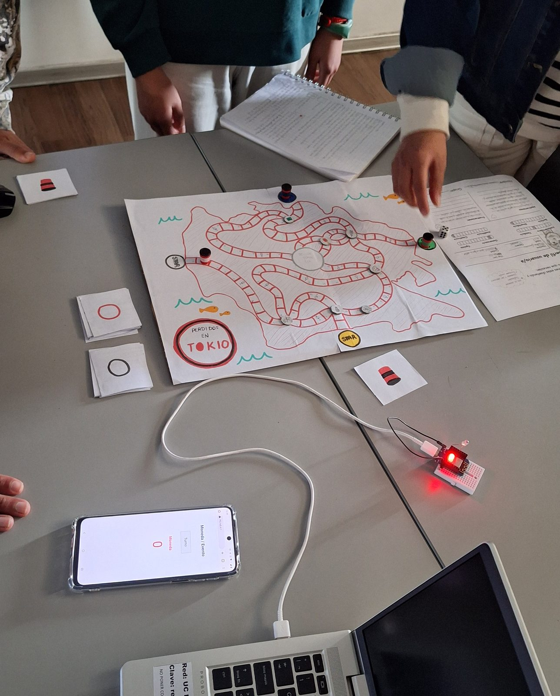
The most recent course brings together the two lines I had been working on separately: the robotics of the space courses and the game design of Máquinas fabulosas. Teams assemble a robot, program it first with blocks and then by editing the code directly, and build the board or terrain the robot has to perform on.
The empathy stage is explicit: each team chooses a type of user (young children, older adults, someone with a specific need) and defines how the robot should behave for that person. Interaction design stops being an add-on and starts to determine the game mechanics.
Proposal, syllabus, methodology and materials designed by me.
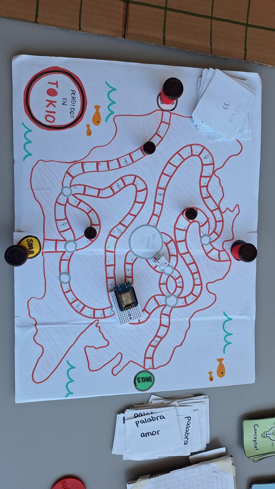
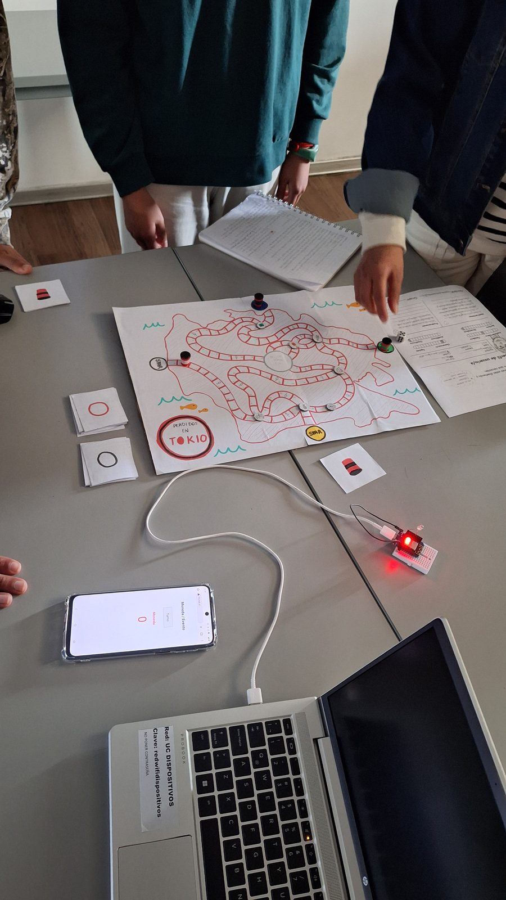
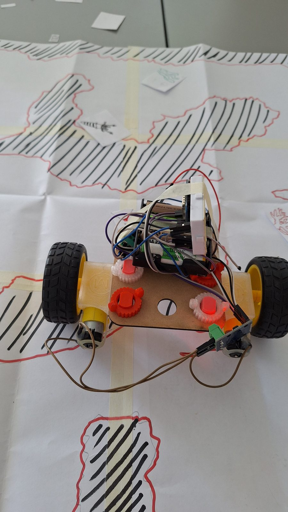
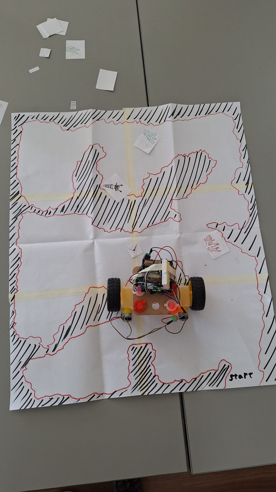
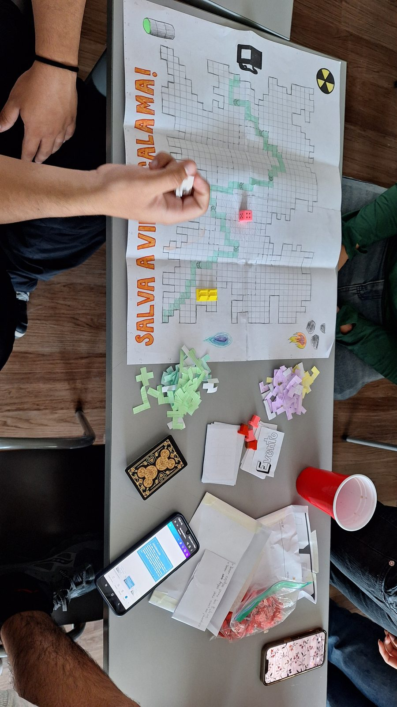
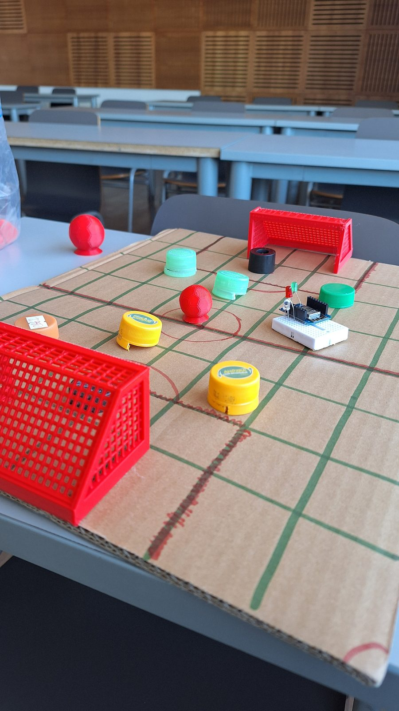
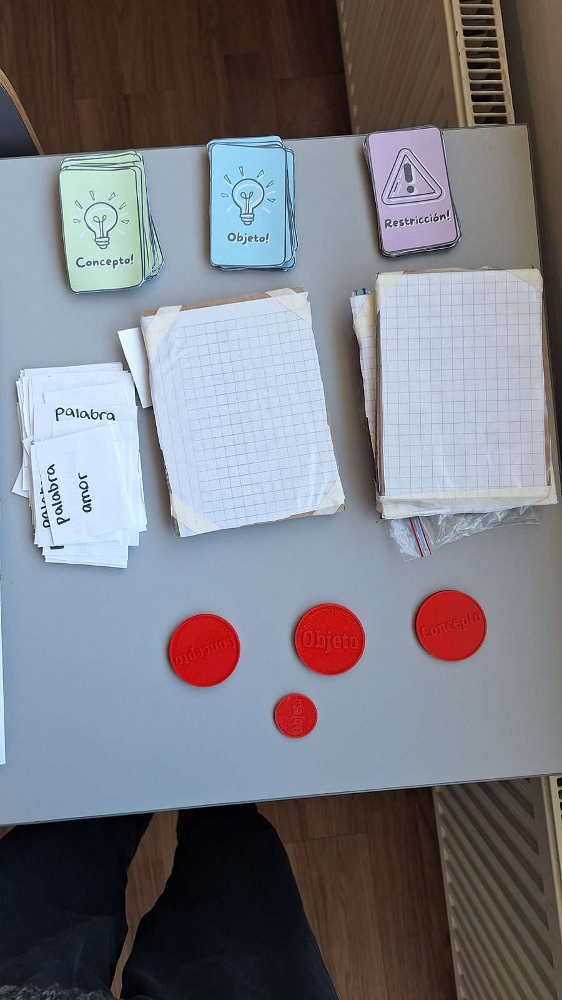
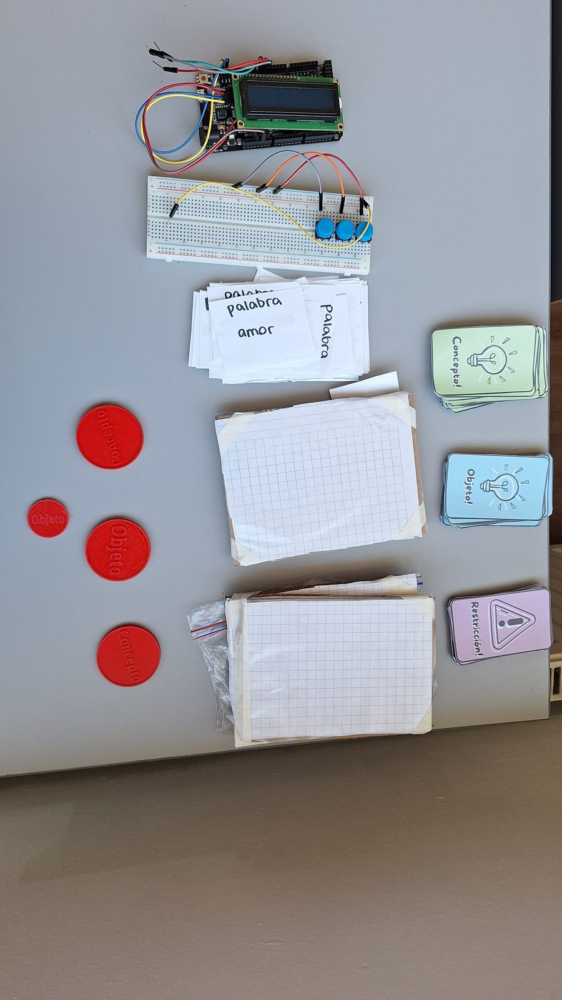
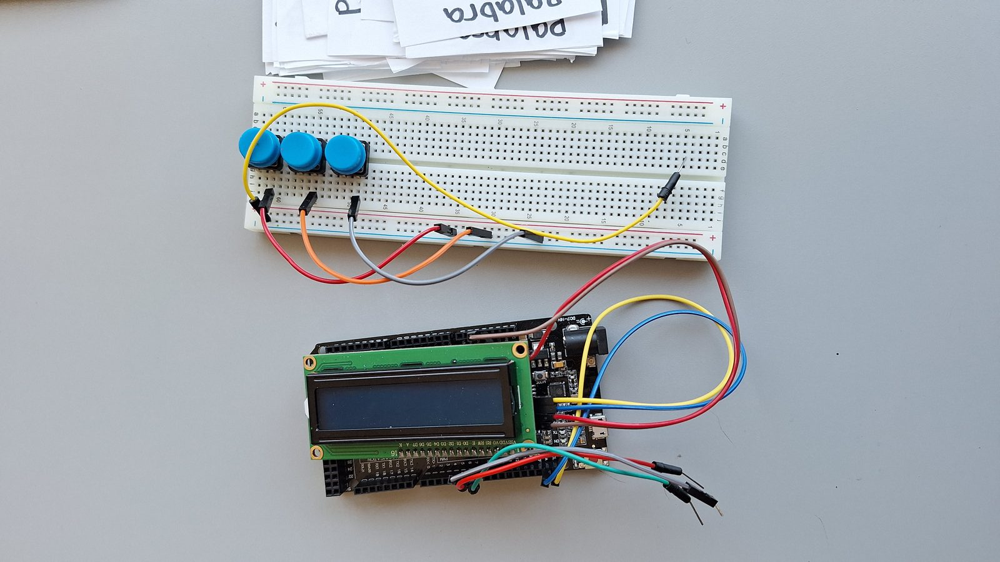
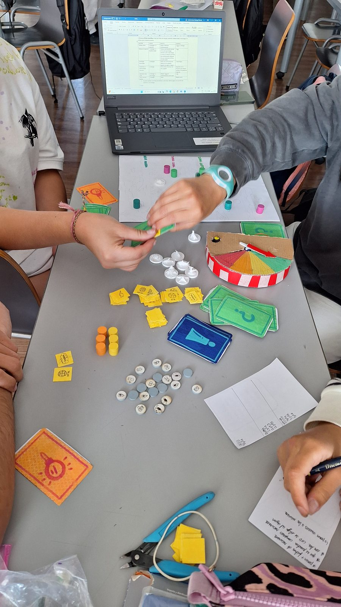
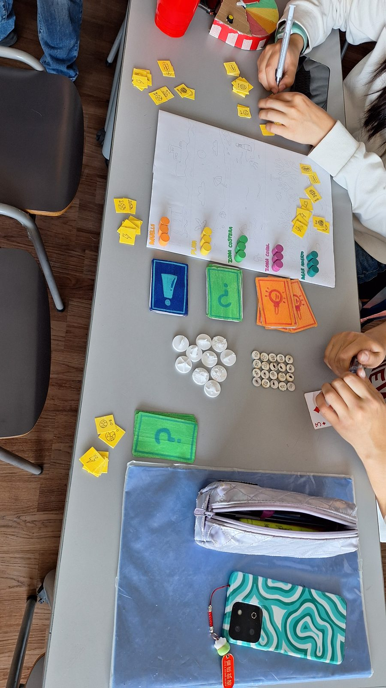
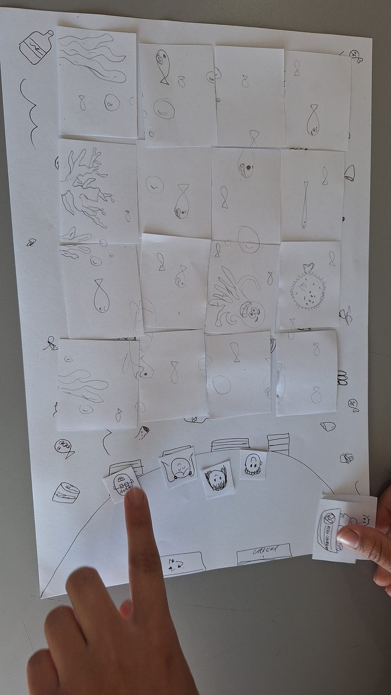
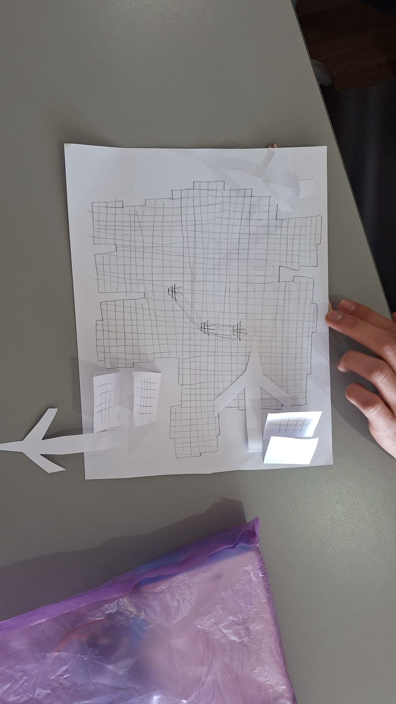
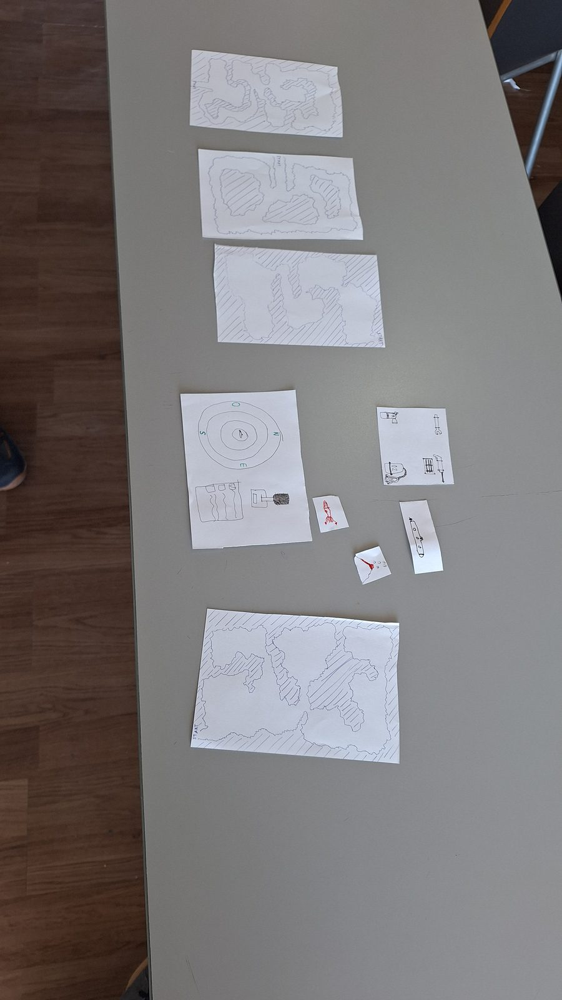
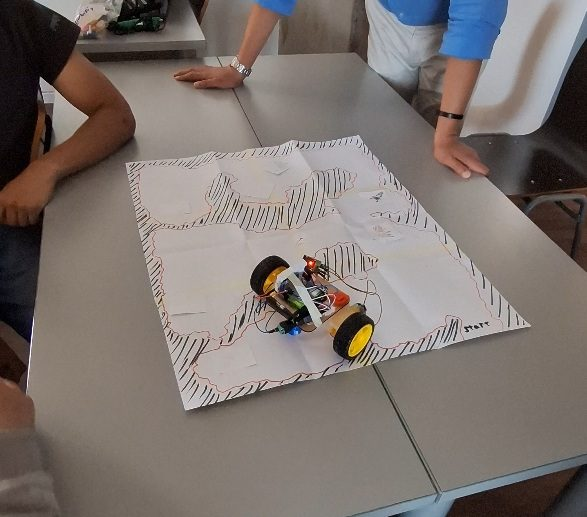
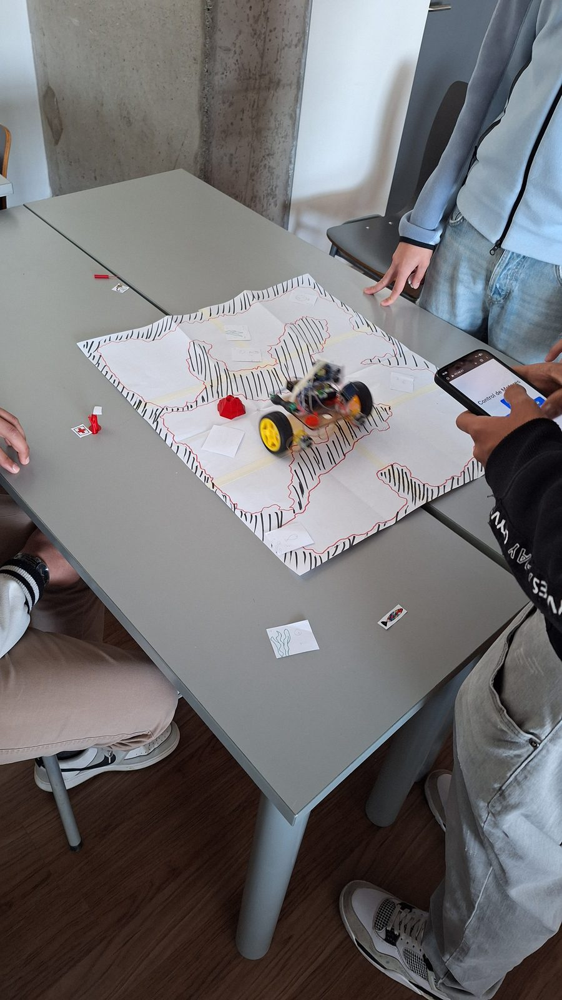
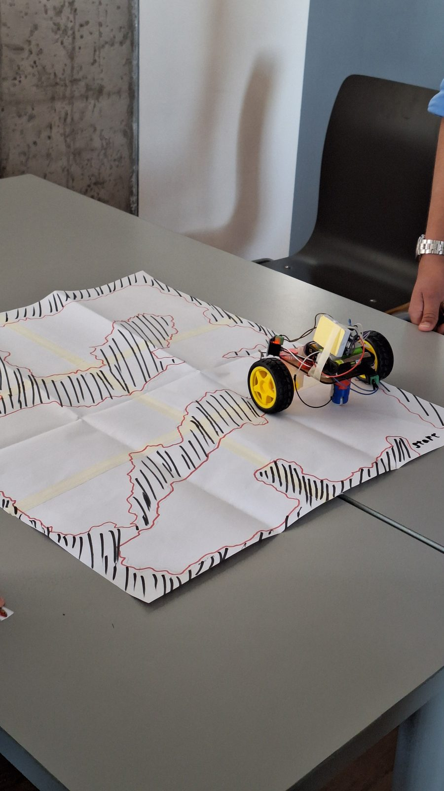